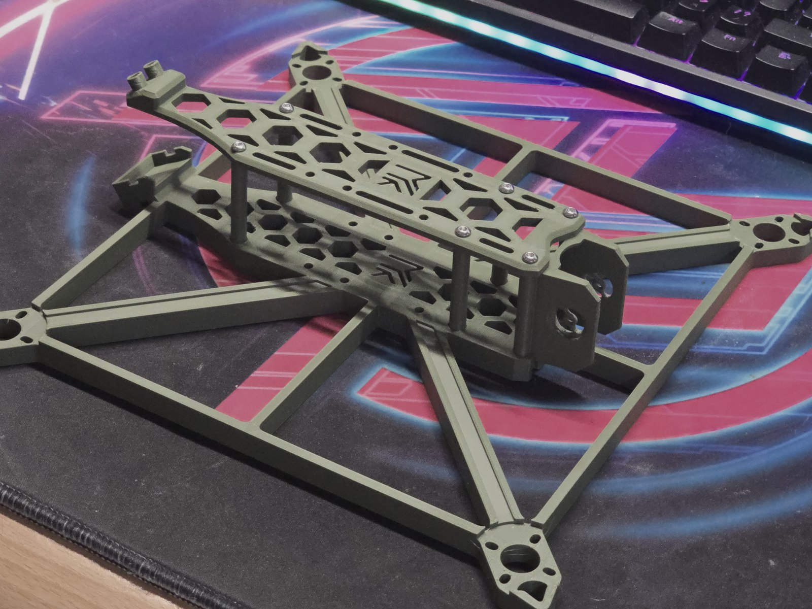
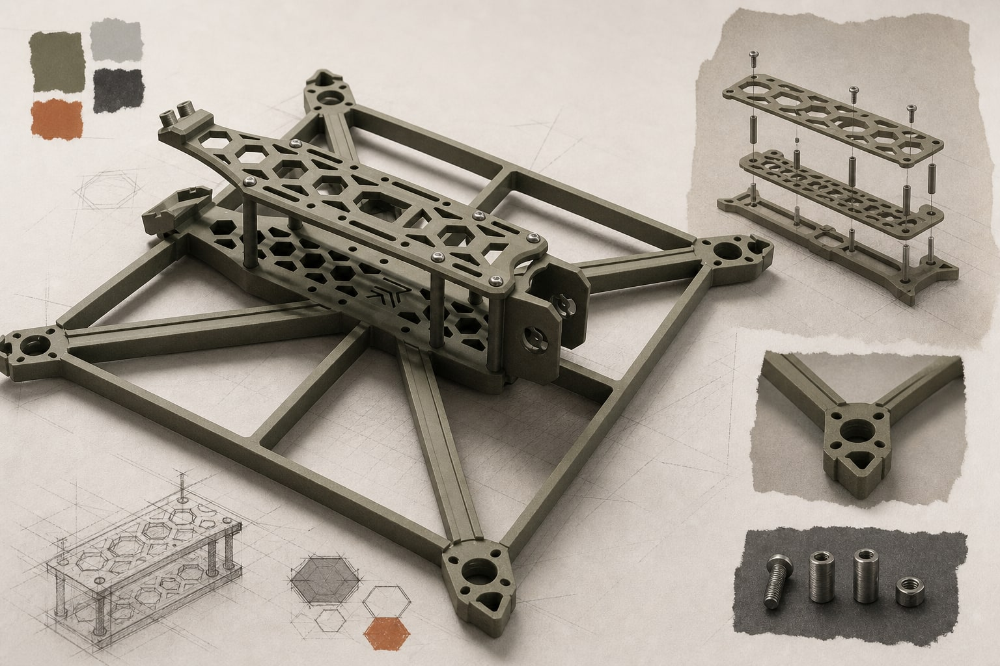

客製無人機平台Custom UAV Platform
一次性訂製的無人機平台建模專案，依據實際組裝、安裝與製作條件整理結構。

Category工業零件與結構建模
Year2025
Status可公開案例
01 — CHALLENGE
需求與限制
專案重點不是單張渲染，而是讓多個零件能依照實際需求形成可製作、可裝配的組合。
02 — SCOPE
負責範圍
- 客製 3D 建模
- 零件與結構配置
- 組裝條件整理
- 製作資料準備
03 — PROCESS
從需求到可確認成果
- 01
條件整理
依據一次性訂製需求，整理平台的安裝、組裝與製作條件。
- 02
結構建模
建立零件與結構配置，處理各部件之間的相對位置。
- 03
製作準備
將模型整理為可供實體製作與組裝使用的資料。
- 04
實體確認
以完成製作與組裝的實體成果確認設計。
04 — RESULT
目前可確認的成果
已完成實體製作與組裝；目前可公開素材以成品特寫與整理後的 Editorial 圖片為主。
05 — GALLERY
實際素材與概念補充
實際照片、render 或公開畫面優先呈現。AI 圖只用於解釋設計與工作語境，不作為實際交付成果證據。



!待補內容REVIEW PLACEHOLDER
後續將補入可公開的模型畫面、零件關係與製作條件。